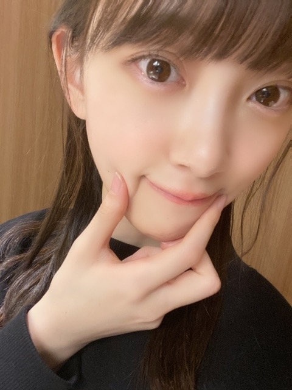
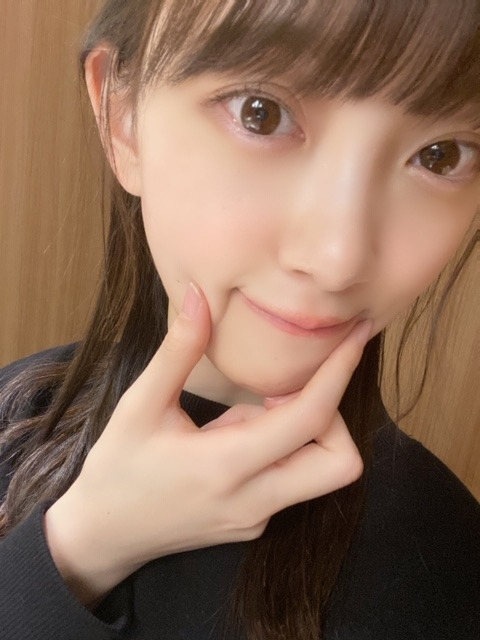

2020/0224Monひつまぶしひまつぶし



昨日はひつまぶしをたべたの！
今日はなんだろう〜
名古屋飯大好きです
味濃いの最高です
今日はバスラ最終日！
地元岐阜県に近い名古屋ドームで4日間もライブをさせていただけることがすごく有難いことですし嬉しいです。
全曲披露ということで199曲の中にたくさんの
思い出のある曲や大好きな曲、素敵な曲が詰まっていて1曲1曲気持ちを込めながら噛み締めながら披露させていただいています✨
自分が参加していない曲も好きな曲ばかり。
大人への近道、君に贈る花がない、threefoldchoice、嫉妬の権利、当たり障りのない話、バレッタ、ゴルゴンゾーラ、スカウトマン、そんなバカな、月の大きさ、かき氷の片想い、amiloving?
はセンターをやらせていただいた曲で特に思い入れがあるので無事披露することができて良かったです☺︎
今日はどの曲を披露するのか...！お楽しみに(^^)
発売中の、ノンノとar よろしくお願いします！
ノンノさんでは美肌特集によんでいただきました...♩
スキンケアや普段気をつけていることをたくさんお話ししたので、是非☺︎
オフショット〜


失恋お掃除人
も若さんに代わり昨年に引き続き、珠美、美月、梅ちゃんと一緒に披露させていただきました
伊藤衆人監督にもライブ用にmv風の素敵な映像を撮っていただいて☺︎
撮影中もみんなで真剣にふざけながら演じれて楽しかったな〜
笑っちゃいけないから笑いを我慢するのが大変でした。笑
梅ちゃんも美月も珠美もボソッと面白いこと言うから笑っちゃう。
あとは、みんな可愛いのに私の顔芸がなかなか酷くて笑いました。笑
ありがとうございました。
ではでは！
後ほど！名古屋ドームでお会いましょう〜！☺︎

昨日はひつまぶしをたべたの！
今日はなんだろう〜
名古屋飯大好きです
味濃いの最高です
今日はバスラ最終日！
地元岐阜県に近い名古屋ドームで4日間もライブをさせていただけることがすごく有難いことですし嬉しいです。
全曲披露ということで199曲の中にたくさんの
思い出のある曲や大好きな曲、素敵な曲が詰まっていて1曲1曲気持ちを込めながら噛み締めながら披露させていただいています✨
自分が参加していない曲も好きな曲ばかり。
大人への近道、君に贈る花がない、threefoldchoice、嫉妬の権利、当たり障りのない話、バレッタ、ゴルゴンゾーラ、スカウトマン、そんなバカな、月の大きさ、かき氷の片想い、amiloving?
はセンターをやらせていただいた曲で特に思い入れがあるので無事披露することができて良かったです☺︎
今日はどの曲を披露するのか...！お楽しみに(^^)
発売中の、ノンノとar よろしくお願いします！
ノンノさんでは美肌特集によんでいただきました...♩
スキンケアや普段気をつけていることをたくさんお話ししたので、是非☺︎
オフショット〜
失恋お掃除人
も若さんに代わり昨年に引き続き、珠美、美月、梅ちゃんと一緒に披露させていただきました
伊藤衆人監督にもライブ用にmv風の素敵な映像を撮っていただいて☺︎
撮影中もみんなで真剣にふざけながら演じれて楽しかったな〜
笑っちゃいけないから笑いを我慢するのが大変でした。笑
梅ちゃんも美月も珠美もボソッと面白いこと言うから笑っちゃう。
あとは、みんな可愛いのに私の顔芸がなかなか酷くて笑いました。笑
ありがとうございました。
ではでは！
後ほど！名古屋ドームでお会いましょう〜！☺︎
2020/02/24 11:40


コメント(317)
頑張ってね！
名古屋でのバースデイライブもいよいよ本日が千秋楽。ひつまぶしに手羽先に味噌カツと、地元名古屋の美味しいもの食べて残る一日も元気に楽しく走り抜けてください。応援しています。
若月さんから軍団長の地位を受け継いだ形の『失恋お掃除人』も無事パフォーマンスできたようで何より。ロスで短期研修中の若様も喜んでいることでしょう。衆人監督もありがとうございました。
ではまたコメント寄せます。Day4もがんばってください。
さらばだ、また会おう！（気球に乗って去りぬ〜）
俺はいけないけど応援してるー
最終日も頑張ってね！
バスラ最終日楽しんでね
ライブビューイングで見てるよ
未央ちゃんnon-noとar見たよ(^ ^)
可愛いかった
未央ちゃん今日も可愛い
オテンキのりさんにお誕生日プレゼントあげないの？笑
斉藤貴巳
『あらロマ』お願いします。
バスラ、お疲れ様です。ああ、私も名古屋行きたいです。きしめん食べたいです。みんな羨ましー。
未央奈ちゃんのセンター曲も増えましたね。次世代メンバーで歌い継ぐ感じですね。乃木坂46のメンバーは声にも特徴があるので、卒業したメンバーの曲は、代わりのメンバーが入って新たなバージョンになります。なのでバスラの円盤を買うのは意味があるのです。
ではまた。
美月となんかユニットやったんですか？
名古屋ぁ。鰻有名。私もあやかりたい。ひつまぶし、おかわりしたい。
名古屋ドーム頑張って下さい。未央奈ぁ。可愛い
今日はバスラ最終日ですね。
疲れてはいませんか？
１日あたり５０曲平均で４日間。凄いです。
青森県在住なのでバスラには行けませんが、応援してます。
卒業を発表した白石麻衣さんのラストバスラですね。未央奈さんは白石さんと長く一緒に活動してるから沢山の想い出があると思いますが、白石さんの歌やパフォーマンスを目にやきつけて、未央奈さんの今後の活動の役立つ何かが見つかるといいですね。
昨日はひつまぶしを食べたんですね。最終日のバスラが終わった後は豪華なご馳走が待ってるんじゃないのかな。
未央奈さんの「ほっぺたプニプニ」の写真。可愛いです。肌が綺麗だし、目が大きく、あごがシュッとしてて小顔。そして、まぶた、頬の薄っすらピンク、りっぷ？口紅？も可愛いピンク色。
理想的な可愛い小顔。
髪もポニーテールが好きなので、今ぐらい伸ばしてくれてるのがいいです。
ラストバスラ！ナゴヤドームのファンの皆様、パブリックビューイングで応援してる皆様のために頑張ってね
未央奈さん。尊敬してます。
今年は２度目のセンターになれるといいですね。
祈ってます。願ってます。
0606より
頑張ろう!(^^)
最終日も よろしくお願いします！
昨日と今日参加してます！
今日はスタンド、女性エリアから観てます！
近くて、それだけで嬉しいです❤️
楽しみにしてます！
応援してます
今日も行きます。
リプ下さ〜い。
これからも大好きです。❤️
最終日全力で行ってこい＼(^-^)／！！
スタンド席から未央奈ちゃんの応援するよー！
今日は一緒に楽しもうね✨
最近ダイエットしてるけどついつい甘いもの食べてしまいます 未央奈ちゃんはどうやって我慢してますか？
いつもブログの写真が可愛くて保存して何回も見てます！
遅れましてごめんなさい。
もう、始まってるのかな…？
わかってなくてごめん
まず、3日間お疲れ様でした！
チケット当たらなくて…行きたかったなぁ
今度こそは生で見たいですな！
何もしてない私が言うのもあれだけど…疲れてると思うので、ゆっくり休んでくださいね！
みおなが見たかった…
失恋お掃除人大好きだから、7thの堀様軍団がめちゃくちゃ嬉しかったんだけど、今年もだったんだね！
見たかったなぁ。
梅と山下と珠ちゃんとみおなってヤバくない？
叫んじゃうんだけど。見てないけど。
もう、始まってると思うけど、最終日頑張ってね！
怪我なく、何も悪いことなく、終われると嬉しいです。
コロナウイルス流行っているので気をつけてね！
身体にも気をつけてください！
これからも頑張ってください！
みおなが頑張っていると元気もらえる！
好き！
僕は名古屋で味噌カツと味噌カツサンドを食べたよ。ひつまぶしも食べたかったな。
名古屋は岐阜の人も来やすそうだしサブ地元凱旋だね。
僕は2日目に行って、未央奈の参加曲がたくさん聴けて楽しかったよ。曲が良いのはもちろんだけど、その曲をやる未央奈が見られるというのが嬉しいよね。
ノンノ買ったよ！美肌の勉強になった。おでこ出してるのも可愛い。未央奈は肌綺麗だね。arも買ったよ。ロクシタンのページの髪型と白ワンピ可愛い。
失恋お掃除人良かったよ！映像も面白かったし、ライブに撮り下ろしMVって贅沢だよね。
最終日も頑張ってね！
では！
久しぶりですね✨
今頃はバースデーライブ真最中やね☺
最後までみ～んな元気で楽しんでくださいね✨
今は仕事終わりでコメントしてます☺
レイちゃんのブログにもコメントしたけど次のシングルが記念の200曲目になるんかな？✨
そちらも楽しみやね✨
バレッタ＆月の大きさ懐かしいな☺
月の大きさのMV俺好きやよ☺
なんかナルトぽいとこも好きかな(笑)✨
とにかく最後まで無事に乗りきって、ちゃんと心身ケアを忘れんとね☺
ではではまたね☺
体調ホンマに気をつけてくださいね✨
あっ、名古屋飯俺も好きです☺
だいぶ前やけど、勿論ひつまぶし好きです。
あとは味噌カツ＆キャベツに白米☺
最高かよ～✨
ほなね、堀ちゃん☺
あ〜いつもなんですけどね……今日は特に未央奈さんを見ると元気出るんですよね。(テレビやブログに載ってる画像をってことです。)これを言っていいのか分からないんですが、精神的にちょっと病んでしまって……とうとう自分にも病み期到来してしまいました。でも、未央奈さんの写真(?)などを見るとなんか落ち着くんですよ。癒されるんですよ。つまり何が言いたいかって言うと……未央奈さんをテレビで見て、元気をもらってます。自分が少しでも笑えるようなきっかけが出来ました。ほんとにありがとうございました！(文章になってないかも )
バスラお疲れ様でした。
開催も危ぶまれるなか
名古屋に来てくれてありがとう。
乃木坂人生に於いて
忘れられない素敵なライブに
なってたら嬉しいです。
ぜひ、また名古屋に来て下さい。
待ってまーす。
応援してるね！
by岐阜県民
やっぱり沢山の名物を食べてるよね？＼(^o^)／
３DAYSお疲れさまでした
今日のLASTも頑張って＼(^o^)／
ああ、失恋お掃除人見たかったなあ(｡>﹏<｡)
ノンノの美肌特集って、未央奈ちゃんの存在は美肌だよ(｡>﹏<｡)♡♡♡
これからも頑張って(/･ω･)/
o(^-^)o
地下街のエスカって所・・・いいね！名古屋メシも
モーニングも行ってみたよ！
手羽先とか名古屋メシのセットのグルメ食べたよ。。
手羽先を上手に食べてみたいと思いました。笑
ブログ更新、ありがとうございます♪
最初の3つの写真は、ポニーテールかな？
前髪の透け感もいい感じ♪
自然な雰囲気がいいですね‼︎
たまちゃんとの2ショットは、なんか姉妹みたい‼︎
目の形、前髪、表情までそっくり(笑)。
女子高校生役、まだまだいけますね♪
ライブと併せて、名古屋飯も楽しんでいるみたいですね〜
自分も味濃いめが好きなので、名古屋飯は大好きです‼︎
味噌カツとか、最初は違和感あったけど、慣れるとめっちゃ美味しい♪
喫茶店でのモーニングも、名古屋で楽しめる地元グルメの1つですよね‼︎
そのお店オリジナルの変わった組み合わせもあって、いろいろと楽しめます♪
チェーン店ではなくて、各店舗独立した喫茶店が多いのも名古屋の特色。
お店によって趣があったりして、落ち着きますよね♪
さて、今日はバースデーライブの最終日。
今ちょうど盛り上がっているところかな？
思う存分楽しんでください‼︎
ではでは、また。
明日も未央奈にとっていい1日になりますように♪
写真かわいい～
癒される～
ひつまぶしってどんな料理ですか？
ひつまぶしって美味しいんですか？
僕食べたことないから分からないです。
名古屋行ってみたいな～
曲名いっぱいある中でバレッタしか分からないです。
勉強不足ですみません。
体調に気をつけて
バスラ最終日頑張ってね。
名古屋満喫してね。
バスラ最中のブログ更新ありがとうございます❗
私は残念ながら、会場には行ってないですが東京から応援してます
本日最終日ですね！しかも、今まさに真っ最中！！
どんな感じか物凄く気になります❗
最終日、悔いなく頑張ってくださいね
こっちから応援してます
ノンノ買いたいけど、今金欠なんで、溜まったら買ってスキンケア研究しようと思います！！
バスラ中のブログ更新ありがとう！
卒業メンバーの代役は、大変ですが、新しい表現ができて、面白いと思います!
未央奈ちゃんの仕事とプライベートのギャップも大好きです!
いつも応援してるよ☺️☺️
大好き❤❤❤
かわいいかわいいかわいい！
テスト中だから行けないけど、応援してます！
がんばってね！
2期生ライブたのしみ〜
ひつまぶし美味しいよね！俺も大好き
いつも未央奈から元気もらってます。
仕事頑張れます。いつか上京するまで頑張ります。
ほんとありがとう！
ノンノ買ったら、未央奈ちゃん載ってたね！
たまちゃんと美月ちゃんと一緒にライブの撮り下ろしMV撮ってたんだ！
名古屋も岐阜に近いし、まさに第二の地元で
縁を感じる所だね
名古屋の人って昔から味が濃いのが好きなんだよね
後、市内には喫茶店が多いみたいだよ！
昔から城下町のイメージって印象が強いから
所々にそれが残ってたりするよね？
名古屋飯も堪能できてるみたいで満喫してますね
今日は、いよいよバースデーライブ最終日
全力で楽しんで
名古屋めしは全て好きです。
岐阜でも名古屋めし、ありますもんね。
未央奈ちゃんがセンターの曲、増えましたねー！
そろそろまた、表題曲のセンターも務めて欲しいと思います♪☆
ライブ行きたかった
ライブ頑張ってね
備長さんの「ひつまぶし」頂きました。名古屋めし 大好きです。最終日頑張って下さい。
未央奈ちゃん拝めて最高でした
4日間のライブは、八年間の努力の結晶で最高な思い出になれますね。これは感動しますね。
次の二期生ライブもね。意義深い。
だんだん大将の姿で後輩を支える存在になった乃木坂の基礎をつくった一期と二期、お疲れ様でした。八年の笑顔と涙。
心配性かもしれないですが新型ウイルスの予防に念を入れてね。中国武漢市の感染拡大事情の経過と厳重性を深刻に感じましたから。油断は禁物ね。
真赤なネクタイ、目立つ。
未央奈先生、バスラお疲れ様です。
ライブ参戦された皆さんもお疲れ様です。
今年始まったばかり！さらに楽しいことがあるぅ
２期生単独ライブも頑張ってね
see you！ (^^)/
ほんとーです！
2期のみなさまは2週間ほど後には次のライブを控えておられ、さらに大変だというのに、地元ネタでライムかまされちゃうという貴殿の底抜けのバイタリティー（それとチャレンジングスピリットもね♡）には本当にずっと感銘を受けておりますであります
コメントする